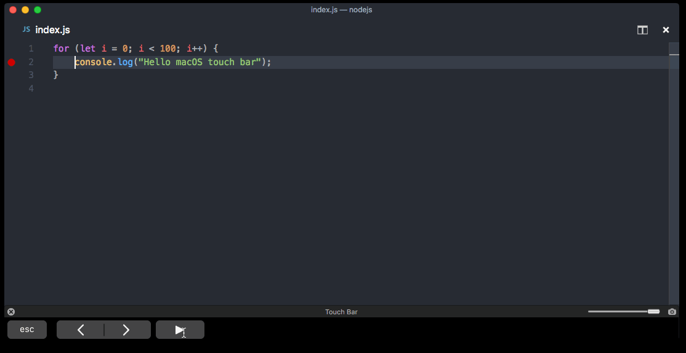

Visual Studio Code on macOS——macOS上的VSCode
Installation——安装
- Download Visual Studio Code for macOS.
为macOS下载VSCode - Open the browser’s download list and locate the downloaded archive.
打开浏览器的下载列表并定位到下载包的位置。 - Extract the archive contents. Use double-click for some browsers or select the ‘magnifying glass’ icon with Safari.
提取存档内容。对于某些浏览器使用双击或者使用Safari选择’放大镜’图标。 - Drag
Visual Studio Code.appto theApplicationsfolder, making it available in the macOS Launchpad.
将Visual Studio Code.app拖到Applications文件夹，使它在macOS Launchpad中可用。 - Add VS Code to your Dock by right-clicking on the icon to bring up the context menu and choosing Options, Keep in Dock.
将 VS Code 添加到 Dock，方法是右键单击图标以显示上下文菜单，然后选择Option、Keep in Dock"。
Launching from the command line——从命令行启动
You can also run VS Code from the terminal by typing ‘code’ after adding it to the path:
你也能从终端启动VSCode，方法是输入’code’，前提是在path中已加入：
- Launch VS Code.
启动VSCode。 - Open the Command Palette (
kbstyle(Cmd+Shift+P)) and type ‘shell command’ to find the Shell Command: Install ‘code’ command in PATH command.
打开命令行面板 (kbstyle(Cmd+Shift+P))并输出’shell command’，找到命令Shell Command: Install ‘code’ command in PATH。

- Restart the terminal for the new
$PATHvalue to take effect. You’ll be able to type ‘code .’ in any folder to start editing files in that folder.
重启终端是新的$PATH值生效。你将能在任意文件夹输入’code .'来在那个文件夹开始编辑文件。
Note: If you still have the old
codealias in your.bash_profile(or equivalent) from an early VS Code version, remove it and replace it by executing the Shell Command: Install ‘code’ command in PATH command.
注意: 如果你仍有旧的来自于早期VSCode版本的code别名在你的.bash_profile(或同等的)中，移除它并替换掉，方法是执行命令Shell Command: Install ‘code’ command in PATH。
Alternative manual instructions——可选手动安装
Instead of running the command above, you can manually add VS Code to your path,
to do so run the following commands:
不用运行上面的命令，你也能手动将VSCode加到path中，运行下面的命令即可：
1 | cat << EOF >> ~/.bash_profile |
Start a new terminal to pick up your .bash_profile changes.
开启新终端以生效.bash_profile中的变化。
Note: The leading slash \ is required to prevent $PATH from expanding during the concatenation. Remove the leading slash if you want to run the export command directly in a terminal.
注意：开头的斜线\是必须的，用来防止在连结过程中$PATH被展开。如果你想直接在终端中执行export命令可以移除开头的斜线。
Note: Since zsh became the default shell in macOS Catalina, run the following commands to add VS Code to your path:
注意：从zsh变成macOS Catalina上默认的shell以后，运行以下命令来添加VSCode到path：
1 | cat << EOF >> ~/.zprofile |
Touch Bar support——支持Touch Bar
Out of the box VS Code adds actions to navigate in editor history as well as the full Debug tool bar to control the debugger on your Touch Bar:
开箱即用的 VS Code 添加了在编辑器历史记录中导航的操作，同样也在Touch Bar上添加了完整的调试工具栏来控制调试器：

Mojave privacy protections——Mojava 隐私保护
After upgrading to macOS Mojave version, you may see dialogs saying “Visual Studio Code would like to access your {calendar/contacts/photos}.” This is due to the new privacy protections in Mojave and is not specific to VS Code. The same dialogs may be displayed when running other applications as well. The dialog is shown once for each type of personal data and it is fine to choose Don’t Allow since VS Code does not need access to those folders. You can read a more detailed explanation in this blog post.
在升级到macOS Mojava版本后，你可能看到对话框表明“VSCode想要进入你的{calendar/contacts/photos}。”，这是因为Mojava新的隐私保护并不是VSCode特有的。同样的对话框也可能会出现在运行其他应用时。对于每种类型的个人数据这个对话框展示一次，选择不允许是可以的，因为VSCode不需要进入那些文件夹。你可以在这个博客贴阅读更多详细说明。
Updates——更新
VS Code ships monthly releases and supports auto-update when a new release is available. If you’re prompted by VS Code, accept the newest update and it will get installed (you won’t need to do anything else to get the latest bits).
VSCode每月发布一次release版并且支持当有新的release版可用时自动更新。如果VSCode提示了，接收更新新版，之后将会安装(你不需要做任何事来获取最新数据)。
Note: You can disable auto-update if you prefer to update VS Code on your own schedule.
注意：如果你偏向按自己的计划更新VSCode，你可以禁止自动更新。
Preferences menu——首选项菜单
You can configure VS Code through settings, color themes, and custom keybindings available through the Code > Preferences menu group.
你可以通过设置、颜色主题和自定义键绑定来配置VSCode，这些可以在菜单组Code > 首选项中获得。
You may see mention of File > Preferences in documentation, which is the Preferences menu group location on Windows and Linux. On a macOS, the Preferences menu group is under Code, not File.
你可能看到在文档中提及文件 > 首选项，这是Windows和Linux上的首选项菜单组的位置。在macOS上，首选项菜单组位于Code之下，而不是文件。
Next steps——下一步
Once you have installed VS Code, these topics will help you learn more about VS Code:
一旦你安装了VSCode，这些主题可以帮助你了解更多：
-
Additional Components - Learn how to install Git, Node.js, TypeScript, and tools like Yeoman.
附加组件 - 学习如何安装Git、Node.js、TypeScript和工具，比如Yeoman. -
User Interface - A quick orientation around VS Code.
用户界面 - VSCode快速引导。 -
User/Workspace Settings - Learn how to configure VS Code to your preferences settings.
用户/工作空间 设置 - 了解如何按你的偏好设置来配置VSCode。
Common questions——一般问题
Why do I see “Visual Studio Code would like access to your calendar.”——为什么我看见“VSCode想进入你的日历。”
If you are running macOS Mojave version, you may see dialogs saying “Visual Studio Code would like to access your {calendar/contacts/photos}.” This is due to the new privacy protections in Mojave discussed above. It is fine to choose Don’t Allow since VS Code does not need access to those folders.
如果你运行的是macOS Mojava版本，你可能看见对话框说明“VSCode想要进入你的{calendar/contacts/photos}。”，这是由于上面讨论的Mojava新的隐私保护。可以选择不允许，因为VSCode不需要进入那些文件夹。
VS Code fails to update——VSCode更新失败
If VS Code doesn’t update once it restarts, it might be set under quarantine by macOS. Follow the steps in this issue for resolution.
如果 VS Code 在重新启动后没有更新，它可能被macOS设置了quarantine。遵循问题的步骤来解决。
Does VS Code run on Mac M1 machines?——VSCode能在Mac M1机器上运行吗？
Yes, VS Code supports macOS ARM64 builds that can run on Macs with the Apple M1 chip. You can install the Universal build, which includes both Intel and Apple Silicon builds, or one of the platform specific builds.
能，VSCode支持macOS ARM64构建版本，它可以运行在苹果M1芯片的Mac上。你可以安装通用的构建版本，它包含了Intel和Apple Silicon构建版本，或者安装具体平台构建版本。